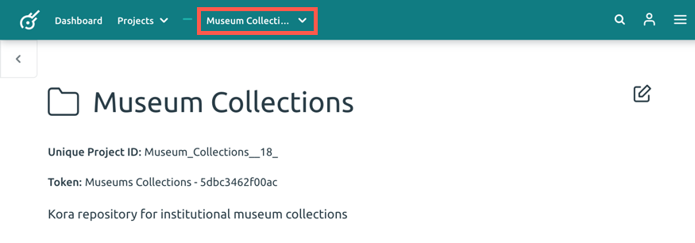
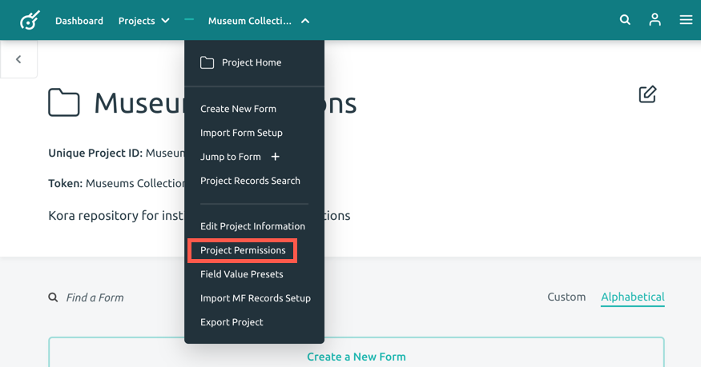
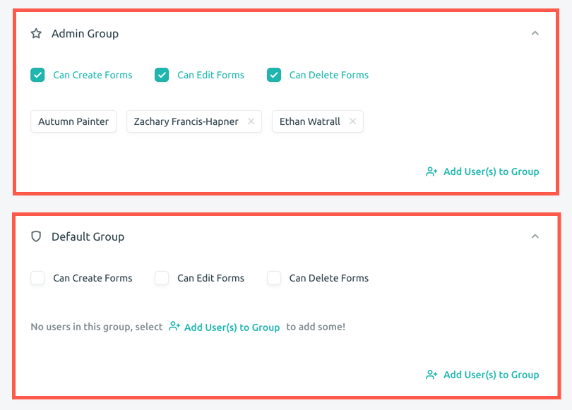
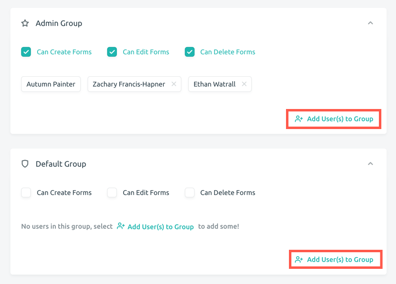
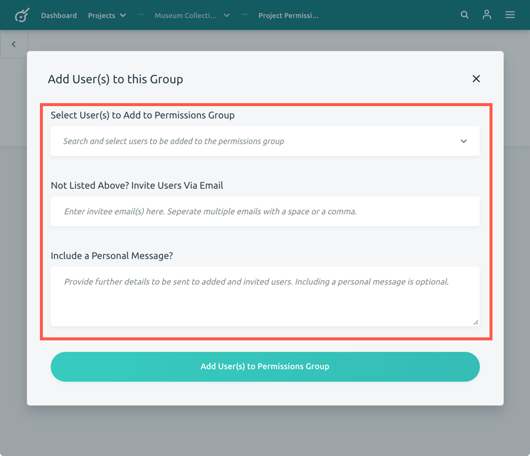
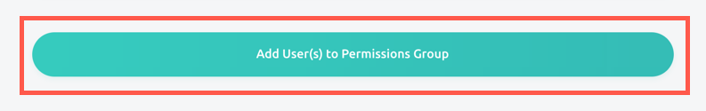
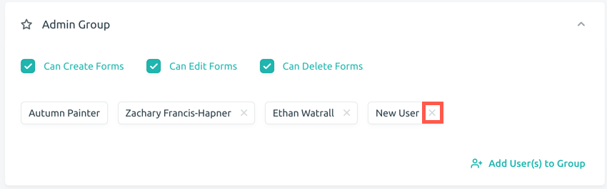
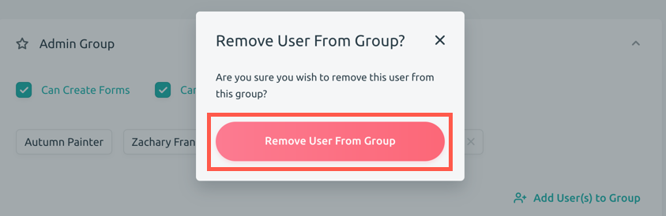

Adding Users to Projects
Kora Admins and Project Admins can add additional users to a project.
If you are interested in learning how to add users to specific forms within a project, visit the Additional Form Administrators guide.
To add additional users to your project, follow these steps:
-
Navigate to your project's landing page. Once there, click the project name in the menu bar to open the project dropdown menu.

-
Click on the Projects Permissions menu item.

-
On the Projects Permissions page, you have the ability to add users to the exisitng Admin Group or the Default Group.

To learn more about the Admin Group and Default Group (and generally how Kora deals with user types and permissiomns, check out the Understanding Kora User Types and Permissions guide.
-
Click on Add User(s) to Group, located in the bottom right corner of either the Admin Group box and Default Group box (dpending on which which group you want to add the new user to).

-
A pop-up window will appear that will allow you to add user(s) to this group. Click on the Select User(s) to Add to Permissions Group dropdown menu to view a list of all users in the Kora install. Select those users you would like to ass to your project (as many as uou want). Alternatively, you can type a name into the field to find a particular user (this is helpful if your Kora install has a lot of users, and you don't want to scroll through a very long list of names to find the person you want). If the user you want to add doesn't have an existing Kora account, you can enter their email into the Not Listed Above? Invite USers Via Email field. Separate multiple emails should be separated by a comma. Enter a personal message (which will be include in the invite email) into the Include a Personal Message? field.

-
When you are finished, click the Add User(s) to Permisons Group button.

A pop-up window will appear on the top right of the screen notifying you that your user(s) were successfully added.
Removing User from Project
To remove users from a project, navigate to the . Project Permissions page (as desribed above).
-
Click on the X to the right of the name of the person you wish to remove.

-
When the confirmation pop-up window opens, click on the red Remove User From Group button.

A pop-up will appear on the top right corner of your screen notifying you that the user was successfully removed.
The removed Kora user will be notified via email. The email notification will include which project(s) they were removed from and who made the permissions change (name, username, and email).